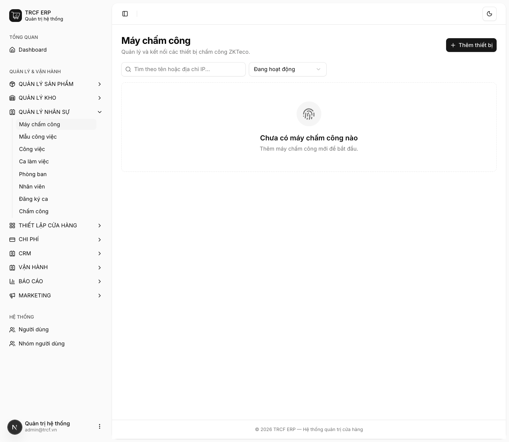
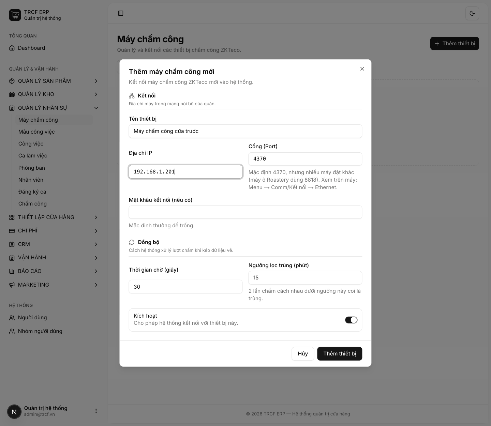
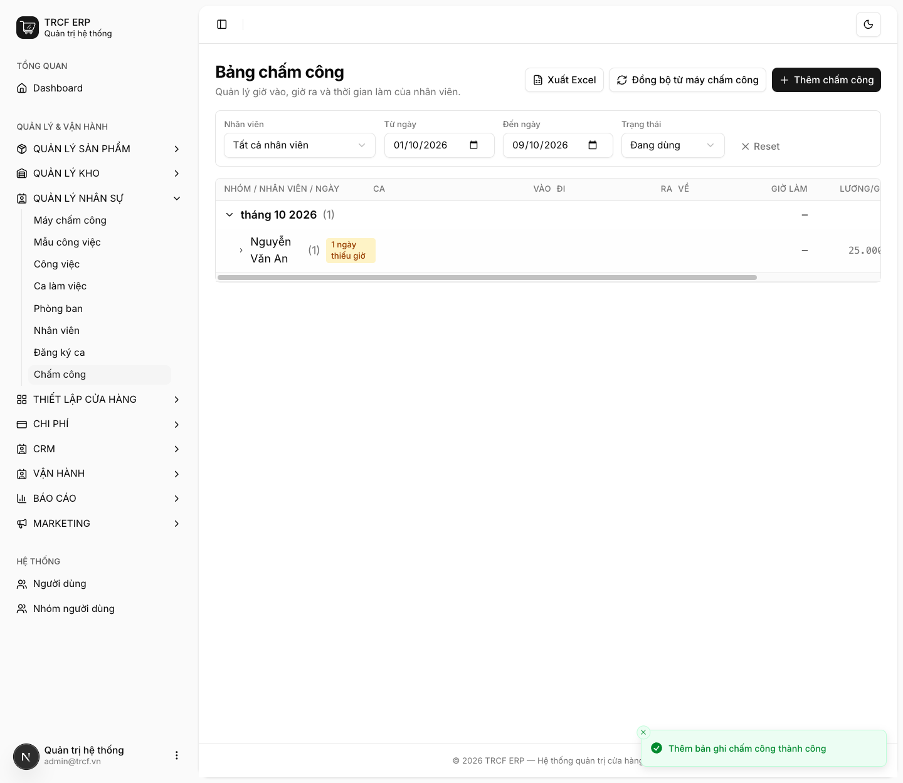
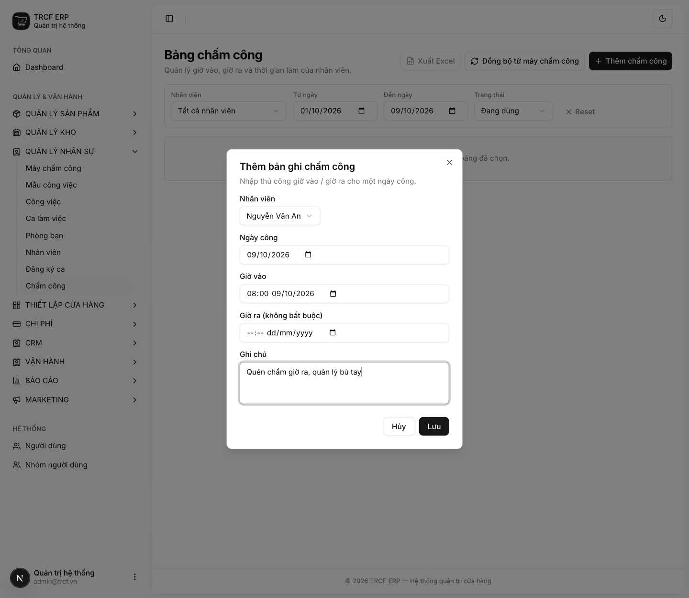

Chương 7 · Quản lý ca làm và chấm công
7.4 Cấu hình, đồng bộ chấm công và tính lương
1. Đường dẫn vào chức năng
Menu trái: Quản lý nhân sự → Máy chấm công (địa chỉ /attendance-devices).
Đồng bộ và xem công ở: Quản lý nhân sự → Chấm công (địa chỉ /attendance).
2. Ví dụ nền và các bước thực hiện
Ví dụ: máy ZKTeco ở cửa trước quán, nhân viên "Nguyễn Văn An" có ID Chấm công "101".
- Máy: tên "Máy chấm công cửa trước", IP "192.168.1.201", cổng "4370".
- Quên chấm giờ ra: quản lý bù tay bằng Thêm chấm công.
Bước 1Mở trang Máy chấm công
- Bấm Quản lý nhân sự ở menu trái, chọn Máy chấm công.
- Bấm Thêm thiết bị.

Bước 2Khai máy chấm công
- Tên thiết bị: nhập "Máy chấm công cửa trước".
- Địa chỉ IP: nhập "192.168.1.201" (IP của máy trong mạng quán).
- Cổng (Port): giữ "4370" nếu đúng; nhiều máy đặt khác, xem trên máy: Menu → Comm/Kết nối → Ethernet.
- Mật khẩu kết nối: thường để trống.
- Thời gian chờ (giây): giữ "30".
- Ngưỡng lọc trùng (phút): giữ "15".
- Kích hoạt: để bật. Bấm nút Thêm thiết bị.
- Ở dòng thiết bị, bấm Kiểm tra kết nối để xác nhận nói chuyện được với máy.

Bước 3Mở Bảng chấm công
- Bấm Quản lý nhân sự → Chấm công.
- Lọc theo Nhân viên, Từ ngày / Đến ngày, Trạng thái.
- Bảng gom theo tháng, rồi theo nhân viên, rồi theo ngày.
- Dòng nhân viên có nhãn "N ngày thiếu giờ" nếu có ngày quên chấm.

Bước 4Đồng bộ từ máy chấm công
- Bấm Đồng bộ từ máy chấm công.
- Máy chấm công: chọn máy. Từ ngày / Đến ngày: chọn khoảng hẹp.
- Bấm Kiểm tra kết nối trước cho chắc.
- Đọc kỹ cảnh báo, rồi bấm Đồng bộ.
- Hệ thống ghép cặp vào–ra theo từng người từng ngày. Lượt lẻ cuối ngày để trống giờ ra.

Bước 5Bù tay khi quên chấm
- Bấm Thêm chấm công.
- Nhân viên: chọn "Nguyễn Văn An".
- Ngày công, Giờ vào, Giờ ra (không bắt buộc): nhập giờ thật.
- Ghi chú: nhập "Quên chấm giờ ra, quản lý bù tay".
- Bấm Lưu.

3. Giải thích các trường
Khai máy chấm công
| Trường | Điền gì | Bắt buộc |
|---|---|---|
| Tên thiết bị | VD "Máy chấm công cửa trước" | ✅ |
| Địa chỉ IP | IP của máy trong mạng nội bộ quán | ✅ |
| Cổng (Port) | Mặc định 4370, nhiều máy đặt khác | ✅ |
| Mật khẩu kết nối | Thường để trống | — |
| Thời gian chờ (giây) | Số giây chờ máy trả lời | — |
| Ngưỡng lọc trùng (phút) | Hai lần quẹt cách nhau dưới ngưỡng này coi là một | — |
Hai nút trong menu thiết bị
| Nút | Làm gì |
|---|---|
| Kiểm tra kết nối | Thử nói chuyện với máy, báo model, firmware, số nhân viên, số lượt chấm |
| Đồng bộ giờ máy | Đẩy giờ máy chủ lên máy chấm công |
Cảnh báo lệch giờ máy
- Mỗi lần kiểm tra kết nối hoặc đồng bộ, hệ thống đối chiếu đồng hồ máy chấm công với máy chủ.
- Lệch từ 1 phút trở lên: cảnh báo vàng kèm nút Chỉnh giờ ngay.
- Thấy cảnh báo: bấm Chỉnh giờ ngay luôn, đừng để qua tuần.
Đọc bảng công
| Dấu hiệu | Nghĩa |
|---|---|
| Dấu — màu hổ phách ở cột Đi hoặc Về | Quên chấm. Dòng nhân viên hiện "N ngày thiếu giờ" |
| Badge tím "2 ca" | Ngày đó người này có hai lượt ca |
| Badge đỏ ở cột Đi | Đi trễ (hổ phách = đến sớm) |
| Badge xanh ở cột Về | Về muộn = làm thêm (đỏ = về sớm) |
Dung sai trễ/sớm chỉnh ở Cấu hình hệ thống → Nhân sự (mục 1.1), mặc định 5 phút. Lệch trong khoảng này tính là Đúng giờ. Các cột: nhân viên, ngày, ca, vào, đi, ra, về, giờ làm, lương/giờ, thành tiền.
4. Lưu ý quan trọng
⚠️
Đồng bộ là GHI ĐÈ.
- Dữ liệu chấm công trong khoảng ngày của những người có lượt trên máy được ghi lại từ đầu.
- Mọi chỉnh sửa tay của quản lý trong khoảng đó sẽ mất.
- Đừng kéo cả tháng nếu chỉ cần bù một ngày.
⚠️
Chỉnh giờ chỉ cứu được lượt chấm SAU đó.
- Lượt đã ghi bằng đồng hồ lệch không sửa ngược được.
- Giá trị của cảnh báo là phát hiện sớm.
⚠️
Hệ thống cố ý không tự chỉnh giờ khi đồng bộ.
- Đẩy giờ lên máy là thao tác ghi đè.
- Chỉnh giữa ca làm nửa ngày lệch nửa ngày đúng, khó gỡ hơn cả lệch đều.
💡
Khoảng 10% số ngày công chỉ có một lượt chấm (quên chấm vào hoặc ra).
- Rà cột "thiếu giờ" hằng tuần, đừng đợi cuối tháng.
💡
Nâng Ngưỡng lọc trùng không giải quyết được chuyện quên chấm.
- Nâng từ 15 lên 120 phút vẫn không đổi tỷ lệ lượt lẻ.
- Ngưỡng cao lại nuốt mất lượt thật.